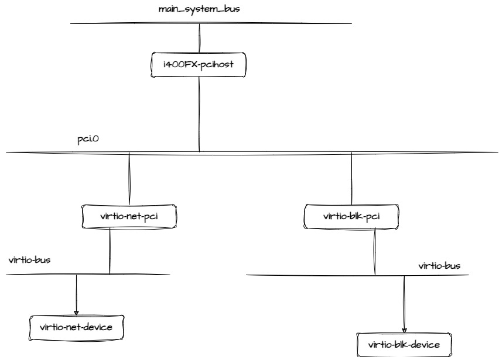

Qemu: Virtio-net Envrionment¶
The commands to start Qemu¶
/usr/bin/qemu-system-x86_64 \
-machine pc-i440fx-1.7,accel=kvm,usb=off,dump-guest-core=off \
-boot strict=on -kernel /run/media/sda1/study/bzImage -append "console=ttyS0 root=/dev/vda rw "\
-drive file=/run/media/sda1/study/wrlinux-image-std-intel-x86-64.ext4,format=raw,if=none,id=drive-virtio-disk0,cache=none \
-device virtio-blk-pci,scsi=off,bus=pci.0,addr=0x3,drive=drive-virtio-disk0,id=virtio-disk0,bootindex=1,write-cache=on \
-netdev tap,id=mynet0,ifname=tap0,script=no,downscript=no \
-device virtio-net-pci,netdev=mynet0,id=net0,mac=52:54:00:61:20:46,bus=pci.0,addr=0x4 \
-vnc :0 -monitor stdio
-netdev 定义一个网卡后端设备，这里tap表示使用tap设备作为后端，
ifname 表示tap设备的名称
script 表示虚拟机打开tap网卡的时候，需要执行的脚本
downscript 表示虚拟机在关闭的时候需要执行的脚本，这里都设置为no，表示不需要执行额外的操作。
这里我们创建一个网路设备，-device virtio-net-pci
Qemu 会在main函数中对所有-device的参数进行具体化, 设备的具体化函数一般都是device_set_realized
The PCI bus topology¶
(qemu) info sev
SEV is not enabled
(qemu) info pci
Bus 0, device 0, function 0:
Host bridge: PCI device 8086:1237
PCI subsystem 1af4:1100
id ""
Bus 0, device 1, function 0:
ISA bridge: PCI device 8086:7000
PCI subsystem 1af4:1100
id ""
Bus 0, device 1, function 1:
IDE controller: PCI device 8086:7010
PCI subsystem 1af4:1100
BAR4: I/O at 0xc060 [0xc06f].
id ""
Bus 0, device 1, function 3:
Bridge: PCI device 8086:7113
PCI subsystem 1af4:1100
IRQ 9.
id ""
Bus 0, device 2, function 0:
VGA controller: PCI device 1013:00b8
PCI subsystem 1af4:1100
BAR0: 32 bit prefetchable memory at 0xfc000000 [0xfdffffff].
BAR1: 32 bit memory at 0xfebd0000 [0xfebd0fff].
BAR6: 32 bit memory at 0xffffffffffffffff [0x0000fffe].
id ""
Bus 0, device 3, function 0:
SCSI controller: PCI device 1af4:1001
PCI subsystem 1af4:0002
IRQ 11.
BAR0: I/O at 0xc000 [0xc03f].
BAR1: 32 bit memory at 0xfebd1000 [0xfebd1fff].
id "virtio-disk0"
Bus 0, device 4, function 0:
Ethernet controller: PCI device 1af4:1000
PCI subsystem 1af4:0001
IRQ 11.
BAR0: I/O at 0xc040 [0xc05f].
BAR1: 32 bit memory at 0xfebd2000 [0xfebd2fff].
BAR6: 32 bit memory at 0xffffffffffffffff [0x0003fffe].
id "net0"
(qemu) info qtree
bus: main-system-bus
type System
dev: hpet, id ""
gpio-in "" 2
gpio-out "" 1
gpio-out "sysbus-irq" 32
timers = 3 (0x3)
msi = false
hpet-intcap = 4 (0x4)
hpet-offset-saved = false
mmio 00000000fed00000/0000000000000400
dev: kvm-ioapic, id ""
gpio-in "" 24
gsi_base = 0 (0x0)
mmio 00000000fec00000/0000000000001000
dev: i440FX-pcihost, id ""
pci-hole64-size = 2147483648 (2 GiB)
short_root_bus = 0 (0x0)
x-pci-hole64-fix = false
bus: pci.0
type PCI
dev: virtio-net-pci, id "net0"
disable-legacy = "off"
disable-modern = true
ioeventfd = true
vectors = 3 (0x3)
virtio-pci-bus-master-bug-migration = true
migrate-extra = false
modern-pio-notify = false
x-disable-pcie = true
page-per-vq = true
x-ignore-backend-features = true
ats = false
x-pcie-deverr-init = false
x-pcie-lnkctl-init = false
x-pcie-pm-init = false
addr = 04.0
romfile = "efi-virtio.rom"
rombar = 1 (0x1)
multifunction = false
command_serr_enable = true
x-pcie-lnksta-dllla = false
x-pcie-extcap-init = false
class Ethernet controller, addr 00:04.0, pci id 1af4:1000 (sub 1af4:0001)
bar 0: i/o at 0xc040 [0xc05f]
bar 1: mem at 0xfebd2000 [0xfebd2fff]
bar 6: mem at 0xffffffffffffffff [0x3fffe]
bus: virtio-bus
type virtio-pci-bus
dev: virtio-net-device, id ""
csum = true
guest_csum = true
gso = true
guest_tso4 = true
guest_tso6 = true
guest_ecn = true
guest_ufo = true
guest_announce = false
host_tso4 = true
host_tso6 = true
host_ecn = true
host_ufo = true
mrg_rxbuf = true
status = true
ctrl_vq = true
ctrl_rx = true
ctrl_vlan = true
ctrl_rx_extra = true
ctrl_mac_addr = true
ctrl_guest_offloads = true
mq = false
guest_rsc_ext = false
rsc_interval = 300000 (0x493e0)
mac = "52:54:00:61:20:46"
netdev = "mynet0"
x-txtimer = 150000 (0x249f0)
x-txburst = 256 (0x100)
tx = ""
rx_queue_size = 256 (0x100)
tx_queue_size = 256 (0x100)
host_mtu = 0 (0x0)
x-mtu-bypass-backend = false
speed = -1 (0xffffffffffffffff)
duplex = ""
indirect_desc = true
event_idx = true
notify_on_empty = true
any_layout = true
iommu_platform = false
use-started = false
dev: virtio-blk-pci, id "virtio-disk0"
disable-legacy = "off"
disable-modern = true
class = 0 (0x0)
ioeventfd = true
vectors = 2 (0x2)
virtio-pci-bus-master-bug-migration = true
migrate-extra = false
modern-pio-notify = false
x-disable-pcie = true
page-per-vq = true
x-ignore-backend-features = true
ats = false
x-pcie-deverr-init = false
x-pcie-lnkctl-init = false
x-pcie-pm-init = false
addr = 03.0
romfile = ""
rombar = 1 (0x1)
multifunction = false
command_serr_enable = true
x-pcie-lnksta-dllla = false
x-pcie-extcap-init = false
class SCSI controller, addr 00:03.0, pci id 1af4:1001 (sub 1af4:0002)
bar 0: i/o at 0xc000 [0xc03f]
bar 1: mem at 0xfebd1000 [0xfebd1fff]
bus: virtio-bus
type virtio-pci-bus
dev: virtio-blk-device, id ""
drive = "drive-virtio-disk0"
logical_block_size = 512 (0x200)
physical_block_size = 512 (0x200)
min_io_size = 0 (0x0)
opt_io_size = 0 (0x0)
discard_granularity = 4294967295 (0xffffffff)
write-cache = "on"
share-rw = false
rerror = "auto"
werror = "auto"
cyls = 1919 (0x77f)
heads = 16 (0x10)
secs = 63 (0x3f)
serial = ""
config-wce = true
scsi = false
request-merging = true
num-queues = 1 (0x1)
queue-size = 128 (0x80)
iothread = ""
discard = false
write-zeroes = false
max-discard-sectors = 4194303 (0x3fffff)
max-write-zeroes-sectors = 4194303 (0x3fffff)
indirect_desc = true
event_idx = true
notify_on_empty = true
any_layout = false
iommu_platform = false
use-started = false
dev: PIIX4_PM, id ""
smb_io_base = 1792 (0x700)
disable_s3 = 0 (0x0)
disable_s4 = 0 (0x0)
s4_val = 2 (0x2)
acpi-pci-hotplug-with-bridge-support = false
memory-hotplug-support = false
addr = 01.3
romfile = ""
rombar = 1 (0x1)
multifunction = false
command_serr_enable = true
x-pcie-lnksta-dllla = false
x-pcie-extcap-init = false
class Bridge, addr 00:01.3, pci id 8086:7113 (sub 1af4:1100)
bus: i2c
type i2c-bus
dev: smbus-eeprom, id ""
address = 87 (0x57)
dev: smbus-eeprom, id ""
address = 86 (0x56)
dev: smbus-eeprom, id ""
address = 85 (0x55)
dev: smbus-eeprom, id ""
address = 84 (0x54)
dev: smbus-eeprom, id ""
address = 83 (0x53)
dev: smbus-eeprom, id ""
address = 82 (0x52)
dev: smbus-eeprom, id ""
address = 81 (0x51)
dev: smbus-eeprom, id ""
address = 80 (0x50)
dev: piix3-ide, id ""
addr = 01.1
romfile = ""
rombar = 1 (0x1)
multifunction = false
command_serr_enable = true
x-pcie-lnksta-dllla = false
x-pcie-extcap-init = false
class IDE controller, addr 00:01.1, pci id 8086:7010 (sub 1af4:1100)
bar 4: i/o at 0xc060 [0xc06f]
bus: ide.1
type IDE
dev: ide-cd, id ""
drive = "ide1-cd0"
logical_block_size = 512 (0x200)
physical_block_size = 512 (0x200)
min_io_size = 0 (0x0)
opt_io_size = 0 (0x0)
discard_granularity = 512 (0x200)
write-cache = "auto"
share-rw = false
rerror = "auto"
werror = "auto"
ver = "1.7.0"
wwn = 0 (0x0)
serial = "QM00003"
model = ""
unit = 0 (0x0)
bus: ide.0
type IDE
dev: cirrus-vga, id ""
vgamem_mb = 8 (0x8)
blitter = true
global-vmstate = true
addr = 02.0
romfile = "vgabios-cirrus.bin"
rombar = 1 (0x1)
multifunction = false
command_serr_enable = true
x-pcie-lnksta-dllla = false
x-pcie-extcap-init = false
class VGA controller, addr 00:02.0, pci id 1013:00b8 (sub 1af4:1100)
bar 0: mem at 0xfc000000 [0xfdffffff]
bar 1: mem at 0xfebd0000 [0xfebd0fff]
bar 6: mem at 0xffffffffffffffff [0xfffe]
dev: PIIX3, id ""
addr = 01.0
romfile = ""
rombar = 1 (0x1)
multifunction = true
command_serr_enable = true
x-pcie-lnksta-dllla = false
x-pcie-extcap-init = false
class ISA bridge, addr 00:01.0, pci id 8086:7000 (sub 1af4:1100)
bus: isa.0
type ISA
dev: port92, id ""
gpio-out "a20" 1
dev: vmmouse, id ""
dev: vmport, id ""
dev: i8042, id ""
gpio-out "a20" 1
isa irqs 1,12
dev: isa-fdc, id ""
iobase = 1008 (0x3f0)
irq = 6 (0x6)
dma = 2 (0x2)
driveA = ""
driveB = ""
check_media_rate = true
fdtypeA = "auto"
fdtypeB = "auto"
fallback = "144"
isa irq 6
bus: floppy-bus.0
type floppy-bus
dev: floppy, id ""
unit = 0 (0x0)
drive = "floppy0"
logical_block_size = 512 (0x200)
physical_block_size = 512 (0x200)
min_io_size = 0 (0x0)
opt_io_size = 0 (0x0)
discard_granularity = 4294967295 (0xffffffff)
write-cache = "auto"
share-rw = false
drive-type = "144"
dev: isa-parallel, id ""
index = 0 (0x0)
iobase = 888 (0x378)
irq = 7 (0x7)
chardev = "parallel0"
isa irq 7
dev: isa-serial, id ""
index = 0 (0x0)
iobase = 1016 (0x3f8)
irq = 4 (0x4)
chardev = "serial0"
wakeup = 0 (0x0)
isa irq 4
dev: i8257, id ""
base = 192 (0xc0)
page-base = 136 (0x88)
pageh-base = -1 (0xffffffffffffffff)
dshift = 1 (0x1)
dev: i8257, id ""
base = 0 (0x0)
page-base = 128 (0x80)
pageh-base = -1 (0xffffffffffffffff)
dshift = 0 (0x0)
dev: isa-pcspk, id ""
iobase = 97 (0x61)
migrate = false
dev: kvm-pit, id ""
gpio-in "" 1
iobase = 64 (0x40)
lost_tick_policy = "delay"
dev: mc146818rtc, id ""
gpio-out "" 1
base_year = 0 (0x0)
lost_tick_policy = "discard"
dev: kvm-i8259, id ""
iobase = 160 (0xa0)
elcr_addr = 1233 (0x4d1)
elcr_mask = 222 (0xde)
master = false
dev: kvm-i8259, id ""
iobase = 32 (0x20)
elcr_addr = 1232 (0x4d0)
elcr_mask = 248 (0xf8)
master = true
dev: i440FX, id ""
addr = 00.0
romfile = ""
rombar = 1 (0x1)
multifunction = false
command_serr_enable = true
x-pcie-lnksta-dllla = false
x-pcie-extcap-init = false
class Host bridge, addr 00:00.0, pci id 8086:1237 (sub 1af4:1100)
dev: fw_cfg_io, id ""
dma_enabled = false
x-file-slots = 16 (0x10)
dev: kvmclock, id ""
x-mach-use-reliable-get-clock = false
dev: kvmvapic, id ""
(qemu)
initialize virtio_net_pci instance¶
Thread 1 "qemu-system-x86" hit Breakpoint 3, virtio_net_pci_instance_init (obj=0x555557293140) at /usr/src/debug/qemu/4.1.0-r0/qemu-4.1.0/hw/virtio/virtio-net-pci.c:76
76 /usr/src/debug/qemu/4.1.0-r0/qemu-4.1.0/hw/virtio/virtio-net-pci.c: No such file or directory.
(gdb) bt
#0 virtio_net_pci_instance_init (obj=0x555557293140) at /usr/src/debug/qemu/4.1.0-r0/qemu-4.1.0/hw/virtio/virtio-net-pci.c:76
#1 0x0000555555ad5179 in object_init_with_type (obj=0x555557293140, ti=0x55555633a0e0) at /usr/src/debug/qemu/4.1.0-r0/qemu-4.1.0/qom/object.c:355
#2 0x0000555555ad5908 in object_initialize_with_type (data=data@entry=0x555557293140, size=42096, type=type@entry=0x55555633a0e0)
at /usr/src/debug/qemu/4.1.0-r0/qemu-4.1.0/qom/object.c:466
#3 0x0000555555ad59c4 in object_new_with_type (type=0x55555633a0e0) at /usr/src/debug/qemu/4.1.0-r0/qemu-4.1.0/qom/object.c:635
#4 0x000055555593dfcc in qdev_device_add (opts=0x55555637e1c0, errp=<optimized out>) at /usr/src/debug/qemu/4.1.0-r0/qemu-4.1.0/qdev-monitor.c:615
#5 0x00005555559403df in device_init_func (opaque=<optimized out>, opts=<optimized out>, errp=<optimized out>) at /usr/src/debug/qemu/4.1.0-r0/qemu-4.1.0/vl.c:2191
#6 0x0000555555bcd30a in qemu_opts_foreach (list=<optimized out>, func=0x5555559403d0 <device_init_func>, opaque=0x0, errp=0x5555562bb3d0 <error_fatal>)
at /usr/src/debug/qemu/4.1.0-r0/qemu-4.1.0/util/qemu-option.c:1170
#7 0x00005555557e152c in main (argc=<optimized out>, argv=<optimized out>, envp=<optimized out>) at /usr/src/debug/qemu/4.1.0-r0/qemu-4.1.0/vl.c:4375
(gdb) p *(TypeImpl *)0x55555633a0e0
$4 = {name = 0x55555633a260 "virtio-net-pci", class_size = 248, instance_size = 42096, class_init = 0x555555a67df0 <virtio_pci_generic_class_init>, class_base_init = 0x0,
class_data = 0x0, instance_init = 0x0, instance_post_init = 0x0, instance_finalize = 0x0, abstract = false, parent = 0x55555633a280 "virtio-net-pci-base",
parent_type = 0x555556339f20, class = 0x55555639f330, num_interfaces = 2, interfaces = {{typename = 0x55555633a2a0 "pci-express-device"}, {
typename = 0x55555633a2c0 "conventional-pci-device"}, {typename = 0x0} <repeats 30 times>}}
Thread 1 "qemu-system-x86" hit Breakpoint 1, virtio_net_device_realize (dev=0x55555729b2b0, errp=0x7fffffffe1f0)
at /usr/src/debug/qemu/4.1.0-r0/qemu-4.1.0/hw/net/virtio-net.c:2658
2658 in /usr/src/debug/qemu/4.1.0-r0/qemu-4.1.0/hw/net/virtio-net.c
(gdb) bt
#0 virtio_net_device_realize (dev=0x55555729b2b0, errp=0x7fffffffe1f0) at /usr/src/debug/qemu/4.1.0-r0/qemu-4.1.0/hw/net/virtio-net.c:2658
#1 0x0000555555896628 in virtio_device_realize (dev=0x55555729b2b0, errp=0x7fffffffe250) at /usr/src/debug/qemu/4.1.0-r0/qemu-4.1.0/hw/virtio/virtio.c:2613
#2 0x000055555599c655 in device_set_realized (obj=<optimized out>, value=<optimized out>, errp=0x7fffffffe3d0)
at /usr/src/debug/qemu/4.1.0-r0/qemu-4.1.0/hw/core/qdev.c:834
#3 0x0000555555ad4dd7 in property_set_bool (obj=0x55555729b2b0, v=<optimized out>, name=<optimized out>, opaque=0x55555729e980, errp=0x7fffffffe3d0)
at /usr/src/debug/qemu/4.1.0-r0/qemu-4.1.0/qom/object.c:2079
#4 0x0000555555ad9270 in object_property_set_qobject (obj=0x55555729b2b0, value=<optimized out>, name=0x555555cac945 "realized", errp=0x7fffffffe3d0)
at /usr/src/debug/qemu/4.1.0-r0/qemu-4.1.0/qom/qom-qobject.c:26
#5 0x0000555555ad6b56 in object_property_set_bool (obj=0x55555729b2b0, value=<optimized out>, name=0x555555cac945 "realized", errp=0x7fffffffe3d0)
at /usr/src/debug/qemu/4.1.0-r0/qemu-4.1.0/qom/object.c:1337
#6 0x0000555555a6b022 in virtio_pci_realize (pci_dev=0x555557293140, errp=0x7fffffffe3d0) at /usr/src/debug/qemu/4.1.0-r0/qemu-4.1.0/hw/virtio/virtio-pci.c:1788
#7 0x0000555555a1bbab in pci_qdev_realize (qdev=0x555557293140, errp=<optimized out>) at /usr/src/debug/qemu/4.1.0-r0/qemu-4.1.0/hw/pci/pci.c:2096
#8 0x000055555599c655 in device_set_realized (obj=<optimized out>, value=<optimized out>, errp=0x7fffffffe598)
at /usr/src/debug/qemu/4.1.0-r0/qemu-4.1.0/hw/core/qdev.c:834
#9 0x0000555555ad4dd7 in property_set_bool (obj=0x555557293140, v=<optimized out>, name=<optimized out>, opaque=0x5555572197e0, errp=0x7fffffffe598)
at /usr/src/debug/qemu/4.1.0-r0/qemu-4.1.0/qom/object.c:2079
#10 0x0000555555ad9270 in object_property_set_qobject (obj=0x555557293140, value=<optimized out>, name=0x555555cac945 "realized", errp=0x7fffffffe598)
at /usr/src/debug/qemu/4.1.0-r0/qemu-4.1.0/qom/qom-qobject.c:26
#11 0x0000555555ad6b56 in object_property_set_bool (obj=0x555557293140, value=<optimized out>, name=0x555555cac945 "realized", errp=0x7fffffffe598)
at /usr/src/debug/qemu/4.1.0-r0/qemu-4.1.0/qom/object.c:1337
#12 0x000055555593e394 in qdev_device_add (opts=0x55555637e1c0, errp=<optimized out>) at /usr/src/debug/qemu/4.1.0-r0/qemu-4.1.0/qdev-monitor.c:634
#13 0x00005555559403df in device_init_func (opaque=<optimized out>, opts=<optimized out>, errp=<optimized out>) at /usr/src/debug/qemu/4.1.0-r0/qemu-4.1.0/vl.c:2191
#14 0x0000555555bcd30a in qemu_opts_foreach (list=<optimized out>, func=0x5555559403d0 <device_init_func>, opaque=0x0, errp=0x5555562bb3d0 <error_fatal>)
at /usr/src/debug/qemu/4.1.0-r0/qemu-4.1.0/util/qemu-option.c:1170
#15 0x00005555557e152c in main (argc=<optimized out>, argv=<optimized out>, envp=<optimized out>) at /usr/src/debug/qemu/4.1.0-r0/qemu-4.1.0/vl.c:4375
(gdb)
function: qdev_device_add¶
DeviceState *qdev_device_add(QemuOpts *opts, Error **errp)
{
DeviceClass *dc;
const char *driver, *path;
DeviceState *dev;
BusState *bus = NULL;
Error *err = NULL;
driver = qemu_opt_get(opts, "driver");
if (!driver) {
error_setg(errp, QERR_MISSING_PARAMETER, "driver");
return NULL;
}
driver是 “virtio-net-pci”
(gdb) info local
dc = 0x55555639f330
driver = 0x55555637e230 "virtio-net-pci"
path = <optimized out>
dev = <optimized out>
bus = 0x0
err = 0x0
__func__ = "qdev_device_add"
/* find bus */
path = qemu_opt_get(opts, "bus");
if (path != NULL) {
bus = qbus_find(path, errp);
if (!bus) {
return NULL;
}
if (!object_dynamic_cast(OBJECT(bus), dc->bus_type)) {
error_setg(errp, "Device '%s' can't go on %s bus",
driver, object_get_typename(OBJECT(bus)));
return NULL;
}
} else if (dc->bus_type != NULL) {
bus = qbus_find_recursive(sysbus_get_default(), NULL, dc->bus_type);
if (!bus || qbus_is_full(bus)) {
error_setg(errp, "No '%s' bus found for device '%s'",
dc->bus_type, driver);
return NULL;
}
}
if (qdev_hotplug && bus && !qbus_is_hotpluggable(bus)) {
error_setg(errp, QERR_BUS_NO_HOTPLUG, bus->name);
return NULL;
}
609 if (!migration_is_idle()) {
error_setg(errp, "device_add not allowed while migrating");
return NULL;
}
The bus is pci.0
(gdb) info local
dc = 0x55555639f330
driver = 0x55555637e230 "virtio-net-pci"
path = 0x55555637e3b0 "pci.0"
dev = <optimized out>
bus = 0x5555566c9270
err = 0x0
__func__ = "qdev_device_add"
(gdb) p *bus
$67 = {obj = {class = 0x5555563bcfc0, free = 0x7ffff7d2f3b0 <g_free>, properties = 0x5555566c6d80, ref = 7, parent = 0x5555566c7a60}, parent = 0x5555566c7a60,
name = 0x5555566cadb0 "pci.0", hotplug_handler = 0x55555710c210, max_index = 6, realized = true, num_children = 6, children = {tqh_first = 0x55555721afc0, tqh_circ = {
tql_next = 0x55555721afc0, tql_prev = 0x555556705e50}}, sibling = {le_next = 0x0, le_prev = 0x5555566c7ac0}}
/* create device */
dev = DEVICE(object_new(driver));
if (bus) {
qdev_set_parent_bus(dev, bus);
} else if (qdev_hotplug && !qdev_get_machine_hotplug_handler(dev)) {
/* No bus, no machine hotplug handler --> device is not hotpluggable */
error_setg(&err, "Device '%s' can not be hotplugged on this machine",
driver);
goto err_del_dev;
}
qdev_set_id(dev, qemu_opts_id(opts));
/* set properties */
if (qemu_opt_foreach(opts, set_property, dev, &err)) {
goto err_del_dev;
}
dev->opts = opts;
object_property_set_bool(OBJECT(dev), true, "realized", &err);
if (err != NULL) {
dev->opts = NULL; 637 goto err_del_dev;
}
return dev;
OBJECT(dev)会获取当前dev的Object 结构,所以通过object可以获取当前的dev 的class结构
(gdb) p *(Object *)0x555557293140
$72 = {class = 0x55555639f330, free = 0x7ffff7d2f3b0 <g_free>, properties = 0x555557267c00, ref = 4, parent = 0x55555643dd40}
(gdb) p *$72->class
$73 = {type = 0x55555633a0e0, interfaces = 0x555556399b10, object_cast_cache = {0x0, 0x555555c70165 "device", 0x555555c767b7 "virtio-net-pci-base",
0x555555c6a2d7 "virtio-pci"}, class_cast_cache = {0x0, 0x555555c70165 "device", 0x555555c6a6fd "pci-device", 0x555555c6a2d7 "virtio-pci"},
unparent = 0x55555599ae70 <device_unparent>, properties = 0x55555639d5e0}
(gdb) p *(struct TypeImpl *)0x55555633a0e0
$74 = {name = 0x55555633a260 "virtio-net-pci", class_size = 248, instance_size = 42096, class_init = 0x555555a67df0 <virtio_pci_generic_class_init>, class_base_init = 0x0,
class_data = 0x0, instance_init = 0x0, instance_post_init = 0x0, instance_finalize = 0x0, abstract = false, parent = 0x55555633a280 "virtio-net-pci-base",
parent_type = 0x555556339f20, class = 0x55555639f330, num_interfaces = 2, interfaces = {{typename = 0x55555633a2a0 "pci-express-device"}, {
typename = 0x55555633a2c0 "conventional-pci-device"}, {typename = 0x0} <repeats 30 times>}}
当前dev的typeImpl是virtio-net-pci,它的parent是virtio-net-pci-base
(gdb) p *(struct TypeImpl *)0x555556339f20
$75 = {name = 0x55555633a0a0 "virtio-net-pci-base", class_size = 248, instance_size = 42096, class_init = 0x555555a67c90 <virtio_pci_base_class_init>,
class_base_init = 0x0, class_data = 0x555555fbe760 <virtio_net_pci_info>, instance_init = 0x5555558a7e90 <virtio_net_pci_instance_init>, instance_post_init = 0x0,
instance_finalize = 0x0, abstract = true, parent = 0x55555633a0c0 "virtio-pci", parent_type = 0x555556372790, class = 0x55555639f430, num_interfaces = 0, interfaces = {{
typename = 0x0} <repeats 32 times>}}
virtio-net-pci-base的parent是virtio-pci
(gdb) p *(struct TypeImpl *)0x555556372790
$76 = {name = 0x555556372910 "virtio-pci", class_size = 248, instance_size = 33136, class_init = 0x555555a67fc0 <virtio_pci_class_init>, class_base_init = 0x0,
class_data = 0x0, instance_init = 0x0, instance_post_init = 0x0, instance_finalize = 0x0, abstract = true, parent = 0x555556372930 "pci-device",
parent_type = 0x555556366c80, class = 0x55555637f1f0, num_interfaces = 0, interfaces = {{typename = 0x0} <repeats 32 times>}}
virtio-pci的parent是pci-device
(gdb) p *(struct TypeImpl *)0x555556366c80
$77 = {name = 0x555556366e00 "pci-device", class_size = 232, instance_size = 2272, class_init = 0x555555a174e0 <pci_device_class_init>,
class_base_init = 0x555555a17a50 <pci_device_class_base_init>, class_data = 0x0, instance_init = 0x0, instance_post_init = 0x0, instance_finalize = 0x0, abstract = true,
parent = 0x555556366e20 "device", parent_type = 0x555556356d10, class = 0x55555637f2f0, num_interfaces = 0, interfaces = {{typename = 0x0} <repeats 32 times>}}
pci-device的parent是device
(gdb) p *(struct TypeImpl *)0x555556356d10
$78 = {name = 0x555556356e90 "device", class_size = 176, instance_size = 120, class_init = 0x55555599ac00 <device_class_init>,
class_base_init = 0x55555599abd0 <device_class_base_init>, class_data = 0x0, instance_init = 0x55555599bdd0 <device_initfn>,
instance_post_init = 0x55555599b010 <device_post_init>, instance_finalize = 0x55555599af00 <device_finalize>, abstract = true, parent = 0x555556356eb0 "object",
parent_type = 0x555556374d50, class = 0x55555637f3e0, num_interfaces = 0, interfaces = {{typename = 0x0} <repeats 32 times>}}
device的parent是object
(gdb) p *(struct TypeImpl *)0x555556374d50
$79 = {name = 0x555556374ed0 "object", class_size = 96, instance_size = 40, class_init = 0x555555ad88a0 <object_class_init>, class_base_init = 0x0, class_data = 0x0,
instance_init = 0x0, instance_post_init = 0x0, instance_finalize = 0x0, abstract = true, parent = 0x0, parent_type = 0x0, class = 0x55555637e6b0, num_interfaces = 0,
interfaces = {{typename = 0x0} <repeats 32 times>}}